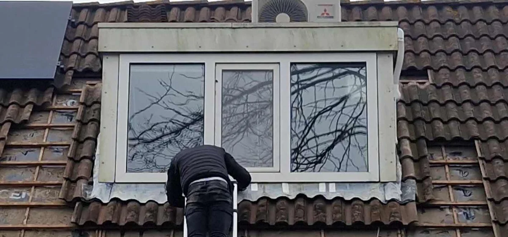
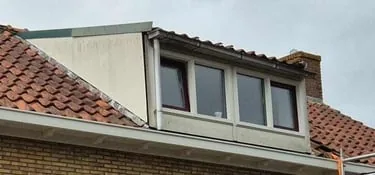
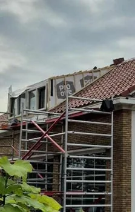

Dakkapel renovatie
Een dakkapel is een mooie uitbreiding van uw zolderkamer. Maar een verouderde dakkapel kan veel gebreken hebben. Tijd voor een renovatie? U lees het hier!
- ✓Kom in contact met een expert voor een vrijblijvend advies en een offerte op maat!
- ✓Onze experts staan voor u klaar. Ontvang gratis advies of meer informatie over uw specifieke situatie!
- ✓Heldere inspectie en duidelijke uitleg vooraf

Situaties uit de praktijk
Beelden van dakdetails, slijtage of werkzaamheden die passen bij dit onderwerp.


Wat u moet weten
Een dakkapel is een mooie manier om uw zolder tot een kamer om te toveren. Veel dakkapellen zijn echter al oud en voldoen niet meer aan de huidige standaarden en kwaliteitsnormen. Lees alles over dakkapellen op onze informatiepagina dakkapel .
Aan het renoveren van een dakkapel is soms niet te ontkomen. Het renoveren van een dakkapel is nodig wanneer deze zorgt voor veel tocht, de buitenkant in slechte staat verkeerd of de dakkapel zorgt voor lekkage. Het vervangen van een dakkapel is vaak erg kostenintensief. Hiervoor is het nodig om een grote kraan te laten komen en de oude dakkapel te verwijderen, om vervolgens een nieuwe dakkapel terug te hijsen. Het renoveren van uw bestaande dakkapel is een kostenefficiënte manier om uw dakkapel in goede staat te brengen, zonder dat hiervoor groot hijs- of transportmaterieel benodigd is.
Bij het renoveren van uw dakkapel, wordt hoofdzakelijk de zijwangen, voorzijde, dakranden en het loodwerk bedoelt. Het kan zo zijn dat het dak van uw dakkapel ook aan onderhoud toe is, hier gaan wij op deze pagina verder niet op in. Informatie over het renoveren van uw platte dak, vind u op onze pagina plat dak vervangen .
Bij het renoveren van uw dakkapel, worden de zijwangen en voorzijde gedemonteerd en het loodwerk verwijdert. Vervolgens wordt het houtwerk van uw dakkapel deel voor deel vervangen. Zo behoud de constructie zijn sterkte en is inzet van groot materiaal als hijskranen of vrachtwagens niet nodig!
Om uw dakkapel weer te laten voldoen aan de laatste normen en standaarden, passen we isolatiemateriaal (PIR-isolatie) toe en vervolgens dampopenfolie.
Kosten dakkapel renoveren
De kosten voor het renoveren van een dakkapel kunnen dusdanig uiteenlopen dat hier geen eenduidig antwoord op te geven is. Deze kosten hangen af van hoe slecht de staat is van uw dakkapel en hoeveel houtwerk van de constructie noodzakelijk vervangen moet worden. Ook de locatie en bereikbaarheid van uw dakkapel kunnen zeer bepalend zijn voor de prijs. Tot slot is natuurlijk de dikte van het isolatiemateriaal en de wijze van afwerking, keralit, UniPanel of anderszins. Eén ding is zeker, een dakkapel renoveren is minder kostbaar dan een dakkapel vervangen en het resultaat, zeker niet minder!
Kom in contact met een expert voor een vrijblijvend advies en een offerte op maat!
Advies of meer informatie nodig?
Onze experts staan voor u klaar. Ontvang gratis advies of meer informatie over uw specifieke situatie!
Wilt u zekerheid over uw dak?
Laat de situatie beoordelen voordat schade groter wordt. U krijgt helder advies over wat nodig is, wat kan wachten en welke oplossing duurzaam is.